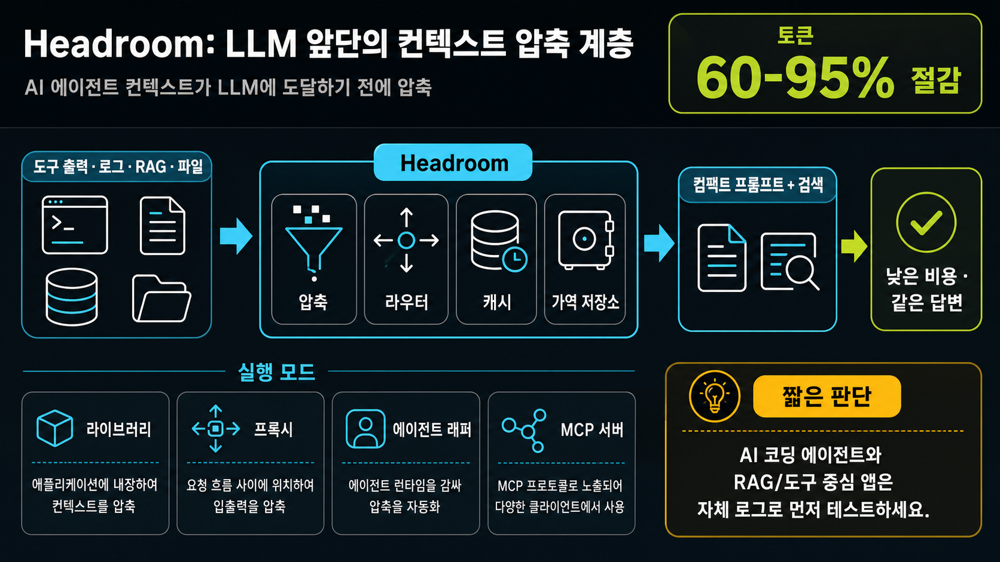

도구 출력, 로그, RAG 조각, 파일, 대화 기록을 LLM에 보내기 전에 줄여 토큰 비용과 컨텍스트 부담을 낮추는 라이브러리·프록시·MCP 도구입니다.
AI 코딩 에이전트·RAG·도구 호출이 많은 앱은 샘플 로그로 압축률과 답변 품질을 먼저 검증해볼 만합니다.
단, 이미 특정 제공자의 네이티브 compaction만으로 충분하거나 로컬 프로세스 실행이 제한된 환경이라면 우선순위는 낮습니다.
LLM이 보기 전에 긴 컨텍스트를 줄이고, 필요한 원문은 다시 찾을 수 있게 보관합니다.
README 기준으로 코드 삽입형부터 무코드 프록시, 에이전트 래핑, MCP 서버까지 여러 진입점이 있습니다.
Python/TypeScript에서 메시지를 직접 압축하는 방식.
OpenAI 호환 흐름 앞단에 프록시를 두고 입력을 줄임.
Claude/Codex/Cursor/Aider류 런타임을 감싸 압축 자동화.
compress/retrieve/stats를 MCP 클라이언트에서 호출.
README는 실제 에이전트 워크로드에서 큰 폭의 토큰 절감을 제시합니다.
원문을 지우지 않고 보관해 LLM이 필요할 때 다시 검색하는 구조를 강조합니다.
컨텍스트 저장·압축 계층을 로컬에서 운영하는 방향을 내세웁니다.
Python 중심이지만 Rust 프록시와 TypeScript SDK/문서 앱도 함께 보입니다.
Stars 9,569, Forks 632, Apache-2.0 라이선스로 공개되어 있습니다.
최신 릴리스는 v0.22.4 (2026-06-01)로 확인됩니다.
세부 파일 트리보다 의사결정에 필요한 성숙도/범위 신호만 요약했습니다.
| 항목 | 확인 내용 |
|---|---|
| 주요 언어 | Python 160,593 LOC, Rust 33,725 LOC, TypeScript 7,633 LOC 수준 |
| 패키징 | PyPI 패키지명 headroom-ai, Python 3.10+, maturin 기반 Rust 확장 포함 |
| 문서/예제 | README, docs, examples, benchmarks, e2e, 문서 앱 흔적 확인 |
| 품질 장치 | CI, release-please, codecov, Rust/pytest/e2e 관련 워크플로가 존재 |
| 라이선스 | Apache License 2.0 |
| 기여 집중도 | 상위 기여자: chopratejas(932), JerrettDavis(250), gglucass(66), adryanev(34), Kayzo(14) |
실제 로그·툴 출력·RAG 조각을 넣어 압축 후 답변 품질과 retrieval 필요 빈도를 측정하세요.
로컬 프로세스, 저장소, 프록시 설정이 조직 보안 정책과 맞는지 확인해야 합니다.
코딩 에이전트를 매일 쓰거나, 도구 출력이 길어 컨텍스트 비용이 커지는 팀.
짧은 단발 프롬프트 위주이거나, 외부 래퍼/프록시 운영 여력이 없는 팀.
결론: “토큰 절약 도구”라기보다, 에이전트 워크플로 앞단에 두는 컨텍스트 운영 계층으로 보는 것이 적절합니다.